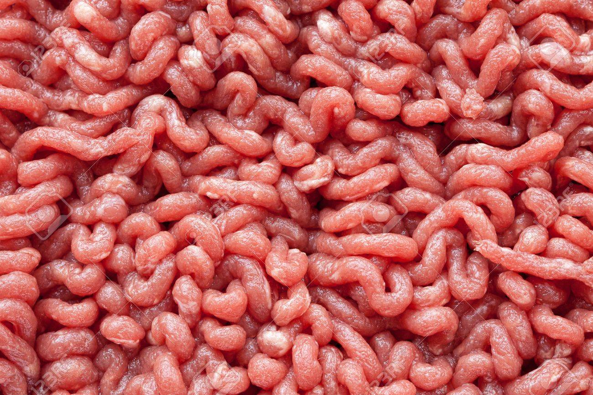
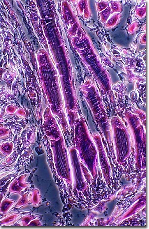
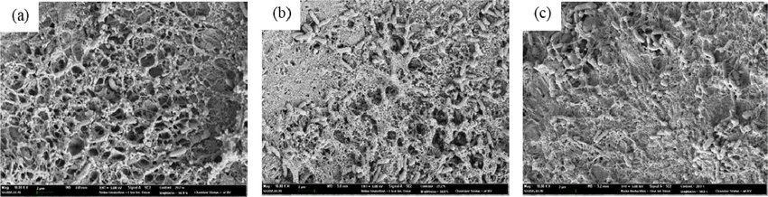
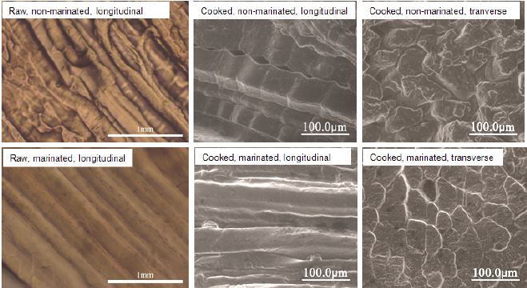

Note: This page is a speculative theory written by a student. It is not established science and not medical advice. Nothing here has been tested or peer reviewed, and it should not be used to diagnose or treat anything. If you are unwell, please see a clinician.
I theorize that diets built on raw or processed animal flesh might change how the body handles decaying matter, and that this could be linked to some of the symptoms we call "rabies". This is a speculative idea about diet and digestion, written as a way to ask questions, not a claim about how rabies works.
Part of my reasoning is an etymology. I speculate that "rabies" could be read as "raw" + "bies" (Dutch/Afrikaans words I take to mean "remains" and "body"). I want to be clear that dictionaries disagree: "rabies" comes from the Latin rabies, "madness" or "rage", from rabere "to rage". My reading is a hypothesis to check with a linguist, not an established origin.
These images come from other sources, linked where I had one. They show meat and cells at the microscope. They do not show rabies, and I am not claiming they do.




A diet theory of rabies would predict that unbitten people on raw-meat diets show rabies-like illness and that the rabies virus is absent. No such cases are known. A study could look for any rabies-like illness in people with no animal exposure, and test for the virus. If the virus is always present, my diet theory does not hold.
If you are bitten or scratched by an animal that might have rabies, wash the wound well and contact a doctor or the local health department straight away. Please do not rely on diet, plants or home remedies. An earlier version of this page named plants to eat. I have removed them, because some of them are toxic.
← Navigation